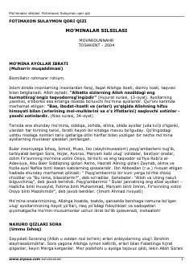

MSTarixdagi buyuk mo‘mina ayollarning ibratli hayot qissalari jamlangan risola.
Ushbu risola tarixda nomi qolgan buyuk mo‘mina, siddiqa va olima ayollarning ibratli hayot yo‘riqlari haqida hikoya qiladi. Kitobda Sora, Hojar, Maryam, Osiyo va Robi’a al-Adaviyya kabi ulug‘ volidalarning hayoti hamda ularning Alloh yo‘lidagi fidoyiliklari bayon etilgan. Asar mo‘min-musulmonlar uchun go‘zal ibrat manbai bo‘lib xizmat qiladi.